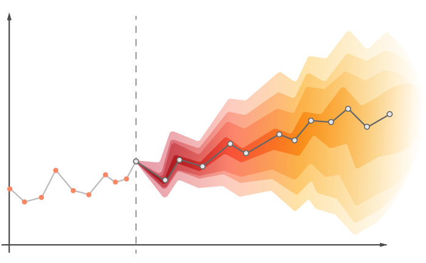

Ina Campan | Data, Statistics & Health
About Me
I am an engineering student at ENSAE Paris and an MSc student in Machine Learning for Health at Universidad Carlos III de Madrid. I hold a double bachelor's degree in Mathematics and Computer Science from Sorbonne University, where I graduated with highest honors. My passion for technology started in high school and led me to engineering and mathematics. Today, I am especially interested in data science, statistics, machine learning and artificial intelligence, and in how these tools can benefit society, particularly in health and women's health. I am also committed to supporting diversity in STEM. Curious and hard-working, I adapt quickly to new environments. I am bilingual in French and Romanian, fluent in English, and improving my Spanish. In my free time, I enjoy film photography.
Last updated: October 2026